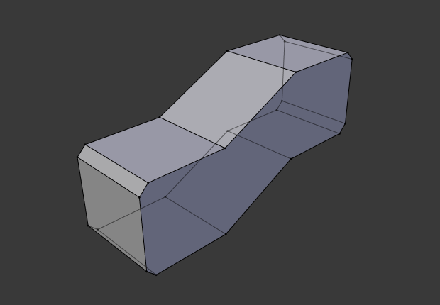
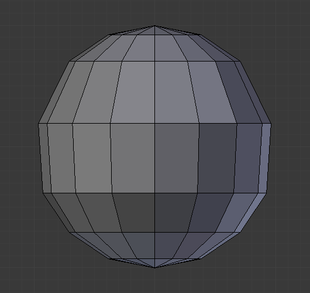
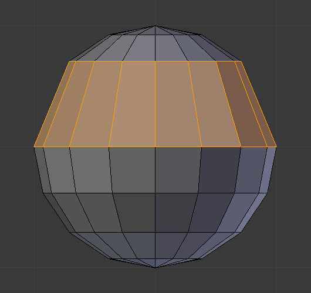

Deleting & Dissolving¶
Reference
| Mode: | Edit Mode |
|---|---|
| Panel: | |
| Menu: |
These tools can be used to remove components.
Delete¶
Reference
| Hotkey: | X, Delete |
|---|
Deletes selected vertices, edges, or faces. This operation can also be limited to:
- Vertices
- Delete all vertices in current selection, removing any faces or edges they are connected to.
- Edges
- Deletes any edges in the current selection. Removes any faces that the edge shares with it.
- Faces
- Removes any faces in current selection.
- Only Edges & Faces
- Limits the operation to only selected edges and adjacent faces.
- Only Faces
- Removes faces, but edges within face selection are retained.
Dissolve¶
Dissolve operations are also accessed from the delete menu. Dissolve will remove the geometry and fill in the surrounding geometry. Instead of removing the geometry, which may leave holes that you have to fill in again.
Removes selected geometry, but without creating holes, effectively turning the selection into a single n-gon. Dissolve works slightly different based on if you have edges, faces or vertices selected. You can add detail where you need it, or quickly remove it where you do not.
Dissolve Vertices¶
Reference
| Mode: | Edit Mode |
|---|---|
| Menu: |
Remove the vertex merging all surrounding faces. In the case two edges, merging them into a single edge.
- Face Split
- When dissolving vertices into surrounding faces, you can often end up with very large, uneven n-gons. The face split option limits dissolve to only use the corners of the faces connected to the vertex.
- Tear Boundaries
- Split off face corners instead of merging faces.
Examples¶

1) Original mesh. 2) Face Split: Off, Tear Boundaries: Off. 3) Face Split: On, Tear Boundaries: Off. 4) Face Split: On/Off, Tear Boundaries: On.
Dissolve Edges¶
Reference
| Mode: | Edit Mode |
|---|---|
| Menu: |
Removes edges sharing two faces (joining those faces).
The options are the same as for the Dissolve Vertices tool.
Dissolve Faces¶
Reference
| Mode: | Edit Mode |
|---|---|
| Menu: |
Merges regions of faces that share edges into a single face.
Note
This can be accessed quickly using the F key, see: Dissolve Existing Faces.
Dissolve (Context-Sensitive)¶
Reference
| Hotkey: | Ctrl-X |
|---|
This is a convenient shortcut that dissolves based on the current selection mode (vertex, edge, face).
Limited Dissolve¶
This tool can simplify your mesh by dissolving vertices and edges separating flat regions.

Original mesh. |

Result of Limited Dissolve. |
{kind=link}
- Max Angle
- Reduces detail on planar faces and linear edges with an adjustable angle threshold.
- All Boundaries
- Always dissolve vertices that have two edge users at boundaries.
- Delimit
- Prevent faces from joining when they don’t share certain properties (material for e.g.).
Edge Collapse¶
Reference
| Mode: | Edit Mode |
|---|---|
| Menu: | |
| Hotkey: | Alt-M, |
Merges each edge into single vertices. This is useful for taking a ring of edges and collapsing it, removing the face loop it ran through.

Selected edge ring. |

Edge ring collapsed. |
{kind=link}
Edge Loop¶
Reference
| Mode: | Edit Mode (Vertex or Edge select modes) |
|---|---|
| Menu: | |
| Hotkey: | X or Delete, |
Edge Loop allows you to delete a selected edge loop if it is between two other edge loops. This will create one face loop where two previously existed.
Note
The Edge Loop option is very different to the Edges option, even if you use it on edges that look like an edge loop. Deleting an edge loop merges the surrounding faces together to preserve the surface of the mesh. By deleting a chain of edges, the edges are removed, deleting the surrounding faces as well. This will leave holes in the mesh where the faces once were.
Example¶
The selected edge loop on the UV Sphere has been deleted and the faces have been merged with the surrounding edges. If the edges had been deleted by choosing Edges from the Delete menu there would be an empty band of deleted faces all the way around the sphere instead.

Selected edge loop. |

Edge loop deleted. |
{kind=link}
See also